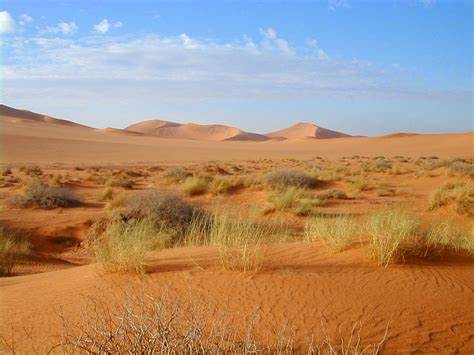
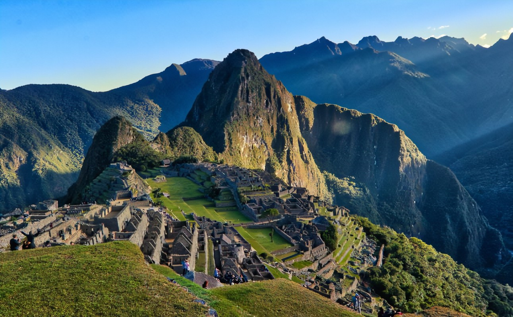

|
Clima Desértico:
|
El clima desértico se encuentra en la costa peruana, con temperaturas cálidas durante todo el año y escasas precipitaciones.
|
Características:
- Temperaturas:
- Elevadas temperaturas durante el día, frescas por la noche.
- Precipitaciones:
- Muy pocas precipitaciones, ambiente seco.
- Estacionalidad:
- Estaciones bien definidas, con veranos secos e inviernos frescos.
- Vegetación:
- Vegetación escasa, adaptada a la aridez.
|

|
|
Clima Tropical de la Selva:
|
El clima tropical de la selva se encuentra en la región amazónica de Perú, con altas temperaturas y lluvias abundantes.
|
Características:
- Temperaturas:
- Elevadas temperaturas y alta humedad durante todo el año.
- Precipitaciones:
- Lluvias abundantes durante todo el año.
- Estacionalidad:
- Estaciones bien definidas, con épocas de lluvia y sequía.
- Vegetación:
- Selva tropical, biodiversidad vegetal y animal.
|

|